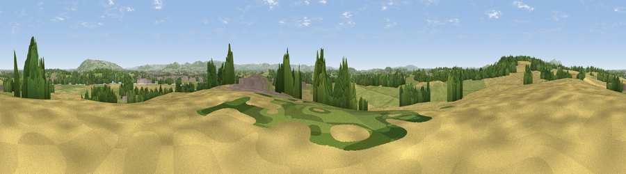

Viewpoint near Bushley
#20794 in England · top 53% of its area beats it · near BushleyWhere it is
The exact computed spot (SO 87275 33325). Click the marker for map links.
The view, rendered

A 360° render of this exact spot computed from the terrain model, tree cover and land cover — summer colours, afternoon light, calibrated against photographs of famous viewpoints. Real trees, hedges and buildings will differ in detail.
The panorama
Grey silhouette: terrain skyline in each direction (720 bearings, Earth curvature and refraction included). Dashed green: skyline with trees (+15 m) and buildings (+8 m) as obstacles. Blue strip: how far the ground is visible on each bearing.
Where the view opens
Wedge length = distance to the farthest visible ground on that bearing (vegetation-aware). Rings at 10, 25 and 50 km.
What fills the view
47% grassland · 31% cropland · 18% woodland · 3% built-up ·
Angular shares of the visible panorama (visual magnitude), not map area. Landscape diversity 0.51 (0–1 Shannon).
Key numbers
More beautiful places nearby
The staircase of upgrades: each row has a higher view potential than everything closer. Driving times are estimates from straight-line distance, calibrated against real road routing — check an actual route before setting out.
| Place | Direction | Drive | Score |
|---|---|---|---|
| Viewpoint near Forthampton | WNW · 2 km | ~4 min | 63.2 |
| Corse Grove Hill | SW · 7 km | ~14 min | 67.6 |
| Viewpoint near Teddington | E · 9 km | ~18 min | 70.6 |
| Viewpoint near Bredon's Norton | NE · 10 km | ~19 min | 81.3 |
| Bredon Hill | NE · 11 km | ~21 min | 83.0 |
| Millennium Hill | WNW · 13 km | ~24 min | 86.9 |
| Worcestershire Beacon | NW · 16 km | ~28 min | 87.1 |
| Viewpoint near West Quantoxhead | SW · 118 km | ~142 min | 87.9 |
51.99822, -2.18676 · source: screening · position refined by local search. Computed location — check access rights before visiting.